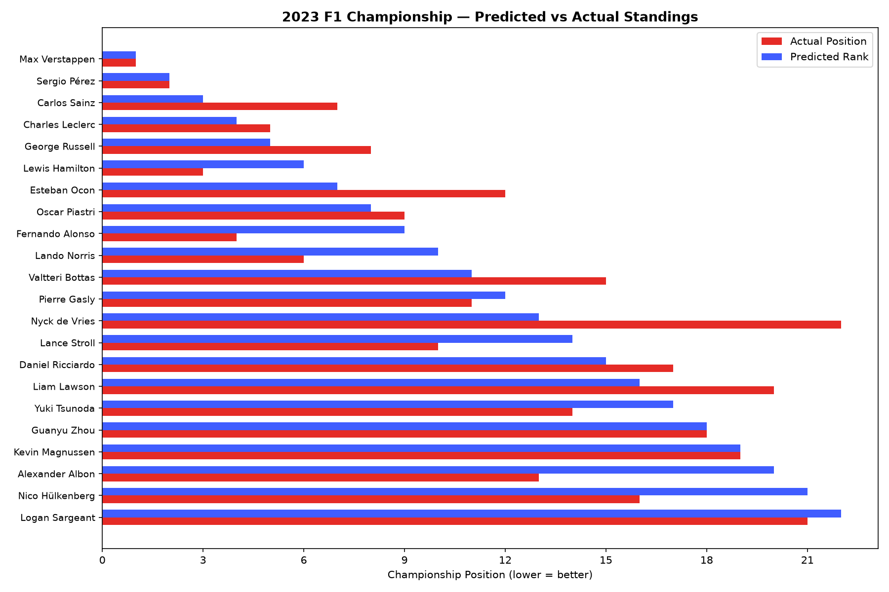
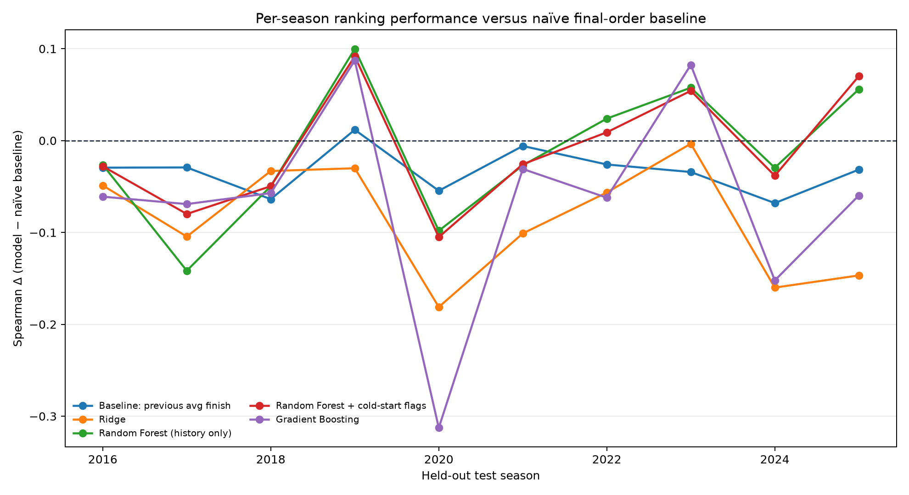

A transparent view of the generated forecast, actual outcome comparison, and rolling-origin benchmark.
Point forecast championMax Verstappen97% champion bootstrap frequency; 100% top-3 frequency
Predicted position3.04
Drivers ranked22
Spearman vs actual0.819
Predicted versus actual

Rolling-origin evaluation
Historical benchmark across chronological test seasons. Each test season is held out in full; lower RMSE is better, while higher R² and Spearman are better.
model
test_seasons
mean_rmse
rmse_sd
mean_r2
r2_sd
mean_spearman
spearman_sd
mean_spearman_delta_vs_naive
spearman_delta_vs_naive_sd
Naive: previous-season final order
10
3.728
0.744
0.641
0.168
0.821
0.084
0.000
0.000
Random Forest + cold-start flags
10
5.982
1.969
0.026
0.668
0.811
0.045
-0.010
0.065
Random Forest (history only)
10
6.189
2.301
-0.071
0.823
0.807
0.058
-0.014
0.074
Baseline: previous avg finish
10
4.543
0.706
0.466
0.247
0.788
0.073
-0.033
0.025
Gradient Boosting
10
6.302
2.087
-0.089
0.754
0.757
0.095
-0.064
0.113
Ridge
10
9.081
1.572
-1.135
1.018
0.734
0.090
-0.087
0.061
Paired comparison with the naïve baseline
Confidence intervals resample whole test seasons. Win/loss counts compare each method with the baseline on exactly the same seasons.

model
test_seasons
mean_spearman_delta_vs_naive
spearman_delta_ci95_low
spearman_delta_ci95_high
spearman_wins
spearman_ties
spearman_losses
mean_rmse_delta_vs_naive
rmse_delta_ci95_low
rmse_delta_ci95_high
rmse_wins
rmse_ties
rmse_losses
Random Forest + cold-start flags
10
-0.010
-0.047
0.028
4
0
6
2.254
1.033
3.600
2
0
8
Random Forest (history only)
10
-0.014
-0.057
0.029
4
0
6
2.460
1.085
3.987
2
0
8
Baseline: previous avg finish
10
-0.033
-0.047
-0.019
1
0
9
0.815
0.557
1.089
0
0
10
Gradient Boosting
10
-0.064
-0.132
-0.000
2
0
8
2.574
1.280
3.971
1
0
9
Ridge
10
-0.087
-0.123
-0.051
0
0
10
5.353
4.518
6.273
0
0
10
Tier classification
Random Forest tier metrics averaged across the same chronological test seasons. Accuracy is the fraction of correctly classified drivers; macro F1 gives each tier equal weight.
model
test_seasons
mean_accuracy
accuracy_sd
mean_macro_f1
macro_f1_sd
Random Forest
10
0.498
0.083
0.414
0.078
tier
test_seasons
mean_f1
f1_sd
Champion
10
0.700
0.399
Podium
10
0.183
0.299
Top 5
10
0.217
0.284
Top 10
10
0.518
0.159
Midfield
10
0.184
0.181
Backmarker
10
0.685
0.104
Where this model breaks
Error analysis uses the same walk-forward Random Forest predictions. Rookie/gap-returning labels and mid-season swaps are post-hoc diagnostic categories, not model inputs; 2022 is isolated as a predeclared regulation-change case study.
Worst test seasons by MAE
test_year
train_end_year
observations
rmse
mae
median_absolute_error
mean_signed_error
spearman
rookie_mae
returning_mae
swap_mae
regulation_change_year
2019
2018
20
8.125
6.036
4.154
3.843
0.744
10.223
3.762
7.700
False
2016
2015
24
9.847
5.772
2.930
3.650
0.849
8.233
4.174
5.387
False
2022
2021
22
5.519
4.355
3.694
1.916
0.832
9.903
2.845
NaN
True
2021
2020
21
8.050
4.195
1.791
3.716
0.874
6.989
1.793
NaN
False
2020
2019
23
4.967
4.161
3.615
0.553
0.768
7.061
3.484
0.252
False
Error by driver/season type
dimension
group
observations
seasons
rmse
mae
median_absolute_error
mean_signed_error
Driver type
Returning after gap
11
6
15.666
12.562
9.448
10.501
Driver type
Rookie
31
10
9.219
7.362
7.304
4.129
Constructor changes
Mid-season swap
9
6
5.774
4.497
4.724
0.804
Regulation context
2022 regulation-change season
22
1
5.519
4.355
3.694
1.916
Constructor changes
No mid-season swap
213
10
6.291
4.182
2.962
1.751
Regulation context
Other test seasons
200
9
6.348
4.177
2.924
1.690
Driver type
Returning
180
10
4.343
3.138
2.554
0.760
Bootstrap uncertainty
Each row reports the distribution from 100 season-level bootstrap Random Forest fits. Frequencies are the fraction of bootstrap rankings placing a driver champion, in the top 3, or in the top 5. P05–P95 describes model sensitivity, not a calibrated 90% prediction interval; historical coverage is reported below.
Predicted Rank
Driver
Predicted Position
Bootstrap Position SD
Bootstrap Position P05
Bootstrap Position P95
Champion Probability
Top 3 Probability
Top 5 Probability
1
Max Verstappen
3.04
0.5996
1.8504
3.6325
97%
100%
100%
2
Sergio Pérez
4.86
0.7699
4.1869
6.5388
0%
49%
92%
3
Carlos Sainz
5.15
0.8955
3.9977
7.0031
0%
57%
91%
4
Charles Leclerc
5.29
1.0129
3.6675
6.9576
1%
65%
84%
5
George Russell
5.66
0.7562
4.9306
7.2555
0%
13%
72%
6
Lewis Hamilton
5.93
0.7775
4.8783
7.3701
0%
10%
51%
7
Esteban Ocon
8.97
0.7573
8.1777
10.3411
0%
0%
0%
8
Oscar Piastri
9.61
3.3327
4.4675
15.1831
2%
6%
10%
9
Fernando Alonso
9.66
1.0935
8.6096
12.1114
0%
0%
0%
10
Lando Norris
11.07
1.3896
8.1180
12.5396
0%
0%
0%
11
Valtteri Bottas
11.72
1.0952
10.0586
13.3600
0%
0%
0%
12
Pierre Gasly
11.74
1.4422
9.1486
13.6829
0%
0%
0%
13
Nyck de Vries
12.47
2.6617
11.3274
19.4459
0%
0%
0%
14
Lance Stroll
12.74
0.7910
12.1150
14.6252
0%
0%
0%
15
Daniel Ricciardo
13.14
0.8999
12.2028
15.0450
0%
0%
0%
16
Liam Lawson
14.48
3.8012
10.5914
22.5800
0%
0%
0%
17
Yuki Tsunoda
14.77
1.3910
12.6574
16.8592
0%
0%
0%
18
Guanyu Zhou
15.19
0.9545
13.3203
16.5098
0%
0%
0%
19
Kevin Magnussen
15.30
1.6169
12.2180
18.3976
0%
0%
0%
20
Alexander Albon
16.29
0.7095
15.1189
17.5402
0%
0%
0%
21
Nico Hülkenberg
17.94
2.1527
15.2395
21.9392
0%
0%
0%
22
Logan Sargeant
29.26
2.7118
24.5453
33.9011
0%
0%
0%
Uncertainty calibration
Historical coverage is measured only on untouched future seasons. Rolling conformal intervals use residuals available before each test season; Brier scores assess probability quality.
test_seasons
observations
nominal_coverage
bootstrap_runs
trees_per_bootstrap_model
point_model_trees
bootstrap_interval_coverage
bootstrap_mean_width
conformal_interval_coverage
conformal_mean_width
top_3_brier_score
champion_brier_score
10
222
0.9
100
50
200
0.342
4.896
0.977
19.899
0.07
0.021
Top-three probability calibration
probability_bin
observations
mean_predicted_probability
observed_top_3_rate
0–20%
183
0.009
0.038
20–40%
6
0.302
0.500
40–60%
8
0.518
0.375
60–80%
6
0.683
0.333
80–100%
19
0.967
0.789
Held-out permutation importance
Importance is the increase in RMSE after permuting one feature in each held-out season. This replaces training-set impurity importance with an out-of-season measurement.